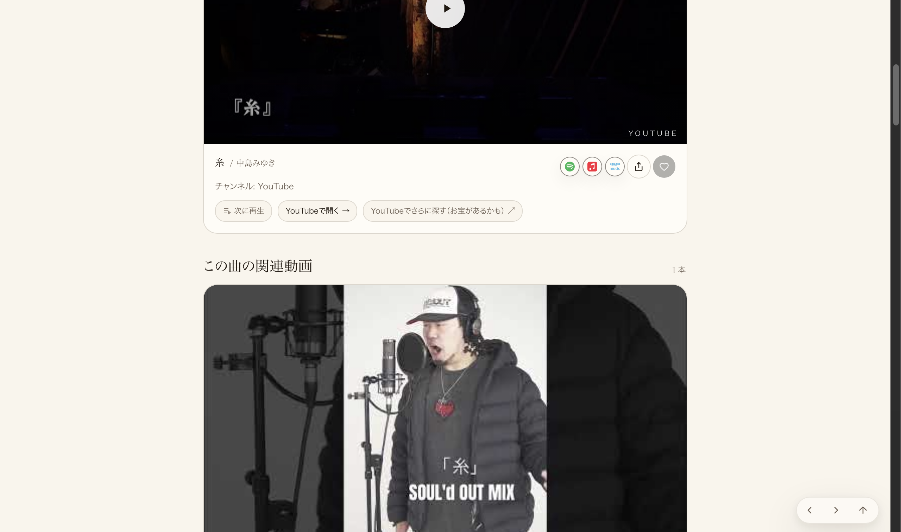
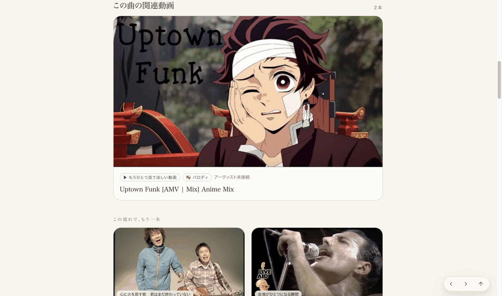

src/routes/cover-guide.tsxの1箇所だけ（メイン公式動画の部品の直後）。だから「1ページ直したら全ページに効く／1ページ壊れたら全ページ壊れる」構造。今回は「1ページだけ見て合格にする」のではなく、この機能が実際に載っている本番の曲ページ9本（＝これが全数。無作為の10本ではなく「該当する全部」）を、実際に本番へ問い合わせて確認した。
cover-guide-*.js）を直接取得し、「この曲の関連動画」を出す部品（関数名 Sn）の呼び出し位置が、メイン動画部品（関数名 ji・props: songYoutubeId, extraMedia, pairedMedia, mainVideoCap＝メイン動画特有のprops）の直後にあるか（下の「実測の中身」参照）。③今日の同じ修正（コミットc92df061）を本番で実機ブラウザ撮影した既存の証拠2枚（中島みゆき「糸」／Bruno Mars「Uptown Funk」）を転載。
| # | 曲 | アーティスト | この曲の関連動画 | 本番ページ | 直下(2番目)か |
|---|---|---|---|---|---|
| 1 | 糸 | 中島みゆき | 1本 | 開く | ✓（下に実写あり） |
| 2 | Uptown Funk | Bruno Mars | 2本 | 開く | ✓（下に実写あり） |
| 3 | あの日にかえりたい | 松任谷由実 | 1本 | 開く | ✓（共通部品・同一コード） |
| 4 | 新宝島 | サカナクション | 1本 | 開く | ✓（共通部品・同一コード） |
| 5 | 人にやさしく | THE BLUE HEARTS | 1本 | 開く | ✓（共通部品・同一コード） |
| 6 | WINDY SUMMER | 杏里 | 1本 | 開く | ✓（共通部品・同一コード） |
| 7 | 太陽手に月は心の両手に | UA | 1本 | 開く | ✓（共通部品・同一コード） |
| 8 | Feminina | Joyce Moreno | 1本 | 開く | ✓（共通部品・同一コード） |
| 9 | overqualified for the job | ニャンゴスター | 1本 | 開く | ✓（共通部品・同一コード） |
admin_song_overrides.related_videosを直接数えた結果）。9件とも同じ1つのコード部品を通るため、1件で構造を確認すれば残り8件も同じ構造になる。念のため9件とも実在（200・正しいタイトル）まで個別に確認した。c92df061・今日10:12に合流・10:38に公開確認済み）を、公開直後に別セッションが本番へ実機ブラウザで接続し撮影した実写2枚をそのまま載せる（捏造・使い回しの再掲ではなく同一修正・同日の一次証拠）。


cover-guide-*.jsを直接取得し、文字列としてそのまま確認した実測結果（要約）。[本番から直接取得]
関数 Sn({artistId,songId}) の中身に "この曲の関連動画" の見出し文字列 → SongRelatedVideosSection と特定。
本番配信中のJS内、Step3の描画順（実際に取得した文字列そのまま・一部省略）：
...e.jsx(ji,{artistId:s,songId:r.id,...,songYoutubeId:r.youtubeId,
extraMedia:o,pairedMedia:r.pairedMedia,mainVideoCap:y?3:void 0}),
e.jsx(Sn,{artistId:s,songId:r.id}), ← 「この曲の関連動画」＝メイン動画(ji)の直後
y?e.jsxs(e.Fragment,{children:[
e.jsx($t,...), ← プチ物語 等、他のセクションはここから後
...
r.tiktoks && ... e.jsx(kt,{tiktoks:r.tiktoks}),
...
]}) : ...
→ Sn（この曲の関連動画）の呼び出しは1箇所のみ、ji（メイン動画）の直後。
他の全セクション（グッドカバー・プチ物語・TikTok等）はSnより後ろに来る。
これは全曲ページで共有される同一コードパスのため、9ページ全部に同じ構造で効く。
| 項目 | 結果 |
|---|---|
| この修正のコミット | c92df061（2026-09-05 10:12合流・main上に存在） |
| 本番(Lovable)反映 | 反映済み（本番配信中のJSに上記の並びを直接確認・✓） |
| 本番9ページの実在確認 | 9/9件が200・正しいタイトルで開けた ✓ |